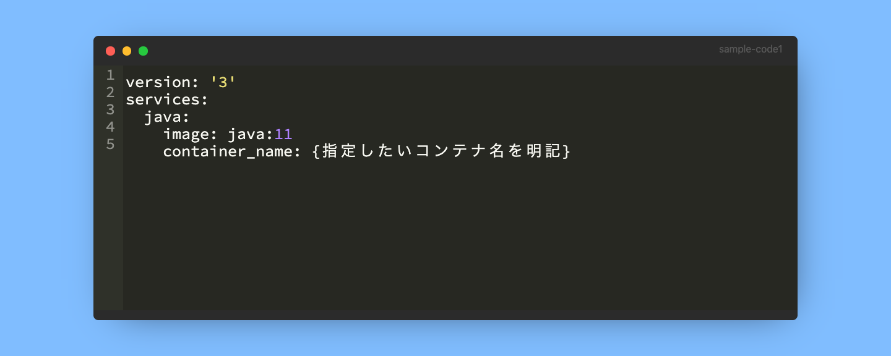
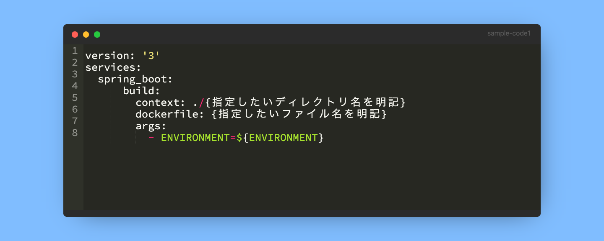
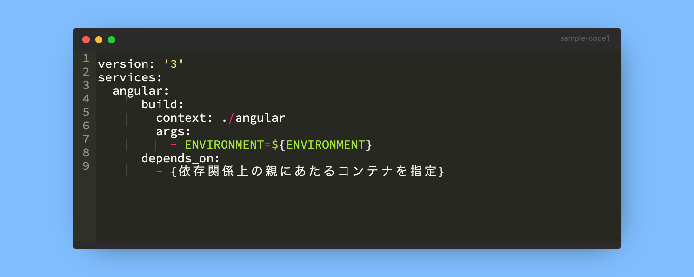
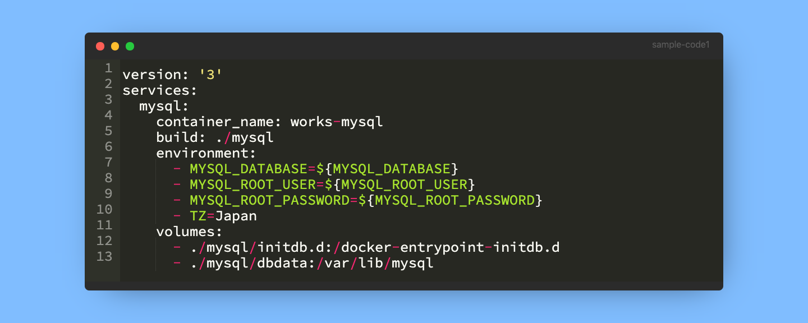
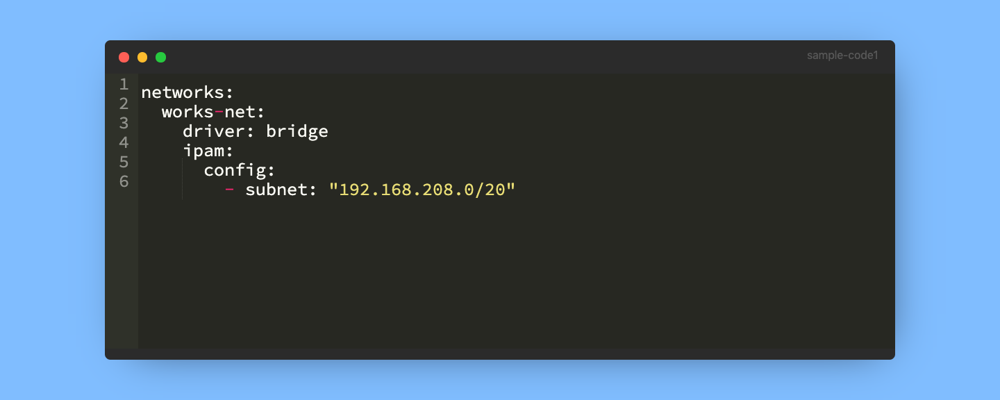
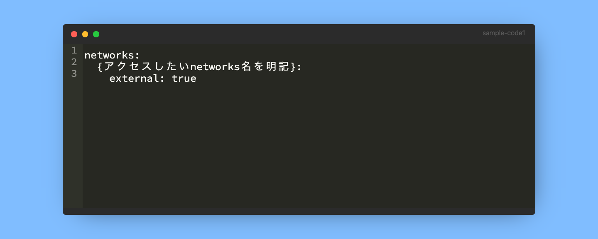
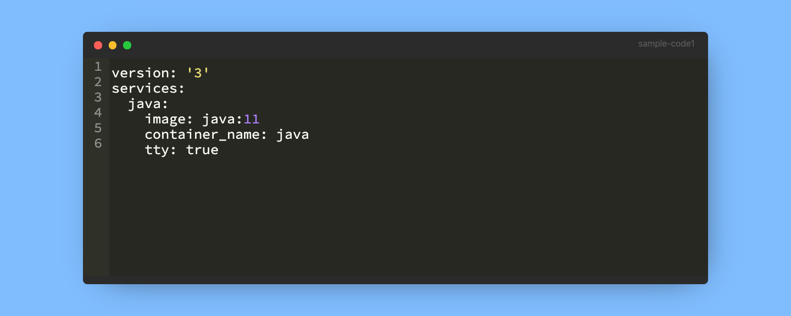

Docker
Docker compose

docker-composeのトピックス
コンテナ名を指定する

イメージを利用しない場合はビルド指定する

コンテナ同士の依存関係がある場合は起動順序を指定する

永続的なデータやファイルがある場合はvolumesを指定する

コンテナ同士の疎通がある場合はnetworksを利用する

docker-composeを分割しコンテナ間の疎通がある場合のnetworks指定方法
明記するnetworks名はプレフィックスを忘れないようにする
BAD
works-net
GOOD
external_works-net

コンテナを起動したままにさせる
ttyオプションを付与する

まとめ
Dockerを利用して開発するうえで、
docker-composeは大変便利です。
ひとつのDockerコンテナで完結する開発であれば、
不要になる話ですが、基本的に複数のコンテナを利用することが多くなると思われます。
コンテナをまとめて管理するのにdocker-composeは、
簡単であり便利だと認識しています。